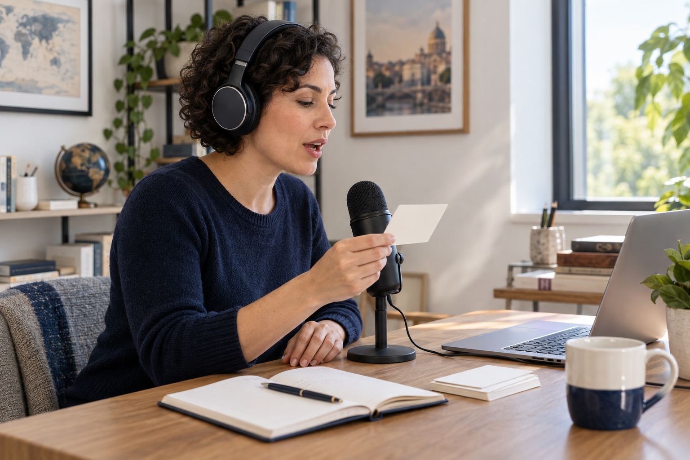

Unit 4 · Pronunciation
Past Verbs: Step-by-Step Pronunciation
Remember the rule. Say one verb at a time. Then try a short sentence.

Listen. Speak slowly. Keep going.
10 verbs + 3 short sentences per sound. Repeat as often as you like. A low score never blocks Next.
Loading the sound rule…
Speed
Tap any word to hear it separately.
Input level0 00:00
Allow microphone access, then say only the word or sentence shown.
Microphone help
Use HTTPS and allow the microphone in your browser's site settings. On iPhone/iPad, check Safari website settings; on Android, check browser and app microphone permissions. Close other apps using the microphone, or select another input above.
This attempt
Green: recognized. Red: not matched. Tap a word to listen again.